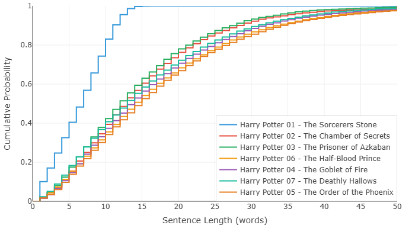

哈利·波特七部曲 — 都是罗琳写的吗？
J.K. 罗琳写了七本哈利·波特。从魔法石到死亡圣器，横跨十年。故事越来越暗，书越来越厚，读者的年纪跟着哈利的年级一起涨。
这七本书到底是不是同一个人写的？这话听着像废话——全世界都知道是罗琳写的。但如果不靠常识，只靠数据呢？把七本书的文字全部扔进分析器，不看作者名，不看标题，只看句子和词汇的分布，你能得出"这是同一个人的作品"的结论吗？
我们跑了这七本书。结果有点意外。
图一：第一部之后，句子突然变了

先看句子长度的分布。《魔法石》的曲线跟后面六本判若两人。
第一部里，短句占了压倒性的比例。曲线紧紧贴着左边走，上升得很快。十来个词以内就收住的句子比比皆是。读起来是轻快的，跳跃的，像一个小男孩第一次推开魔法世界的大门——什么都是新的，什么都不需要解释太久。
从第二部开始，情况变了。句子整体拉长了。从第二部到第七部，六本书的曲线诡异地集中在同一种风格里，与第一部的轻盈感显得那么迥异。
是什么让罗琳写完第一部之后发生了如此剧烈的风格迁移？
一个合理的猜测是：第一部是儿童文学的写法。短句。快节奏。不拖泥带水。罗琳自己后来说过，写《魔法石》的时候她是一个穷困的单身母亲，不知道这本书能不能出版，不知道有没有人会读。她只是在讲一个故事。到了后来，她知道有几百万孩子在等她。书变厚了。句子变长了。叙述的密度增加了。她不是在偷懒，是在满足一群已经长大的读者。
图二：但这就是罗琳写的，毫无疑问

如果只看图一，你可能会怀疑后面几部是不是换了人。图二彻底打消了这个念头。
七条词频曲线高度相似。不是"有点像"，是"几乎就是同一条线上下平移了几次"。七本书的词汇分布，本质上是一套东西。
这件事比看起来要深刻得多。
一个人要模仿另一个人的句子长度，是相对容易的。你想写得像海明威？好，写短句就是了。想写得像福克纳？把句子拉长。句长是一种可以刻意控制的东西，甚至不需要太高的文学素养——你就规定自己每句话不超过十五个词，坚持三页，你也能得出一条类似海明威的曲线。
但词频分布不行。
你无法刻意控制一篇长文本里所有单词出现的频率。这根本不是一个人类大脑能做到的事情。你写了十几万字，用了上万次单词，哪个词用了多少遍、排在第几名、跟其他词的比例关系如何——这些信息量太大，维度太高，你不可能有意识地去操纵它。别说人，就算是 AI，让它按某个精确的词频分布去生成一篇小说，它也做不到。AI 能模仿风格，但它模仿不了统计指纹。
所以词频曲线就是作者的笔迹鉴定。你可以改句子长短，改不了词汇的底层分布。你可以装成另一个人写一段话，但装不了一整本书。
再来仔细看图二。七条线不只是相似，它们还有一个非常有趣的特征：每条线都在某个特定的位置有一个整齐的跳变。
说明什么？说明罗琳对某几个意象的"偏爱"，七本书从未改变。不管故事怎么走，不管主角长多大，她总是回头看那几个词。那几个词在不同书里反复出现，在同一段频率区间留下同样的凸起。
那么，为什么七条线不是完全重合，而是像一层一层的台阶、整体上下平移呢？
从数学上很好理解。我们来假设一下：有一条基础的词频曲线。你写新书的时候，突然需要反复提到一个新形象。比方说《混血王子》里，引入了"混血王子"这个概念——于是"half"这个高频词的使用量就被拉高了。"half"排在 COCA 词频表比较靠前的位置，它一多，后面所有的词在累积比例上都被轻微抬高了一点点。整条曲线看起来就"整体上移"了。
换个说法：平移不是因为风格变了，是因为每本书多塞了几个新人物、新意象。
这对系列小说尤其适用。主线人物不变，核心场景不变，每本书围绕一个新主题展开——火焰杯带来一批竞赛词汇，凤凰社带来一批反抗词汇，混血王子带来一批身份词汇。新加进来的东西把曲线轻轻往上顶了一下，但曲线本身的大形态纹丝不动。
所以图二告诉我们的事，比图一更根本。句子可以变长，词汇可以扩容，但那只握笔的手，从始至终是同一个。
数据说：不用看封面上的署名，这就是罗琳。